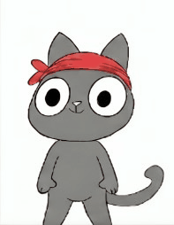
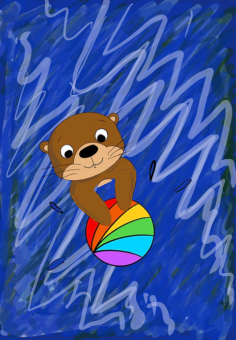

Pip and friendsStorybook concept
 Bethany Jayne
Bethany JayneIllustration for little imaginations
I create expressive characters, playful worlds and gentle stories that help young readers feel curious, capable and seen.
 made for curious minds
made for curious mindsSelected work
From environmental adventures to reassuring everyday stories, each project starts with a character worth rooting for.


The approach
Good children's marketing begins with a world children want to enter. I build visual identities that make a story easy to recognise, emotionally inviting and memorable for the grown-ups choosing it too.
My work is rooted in observation, nature and the small details that make a character feel real.